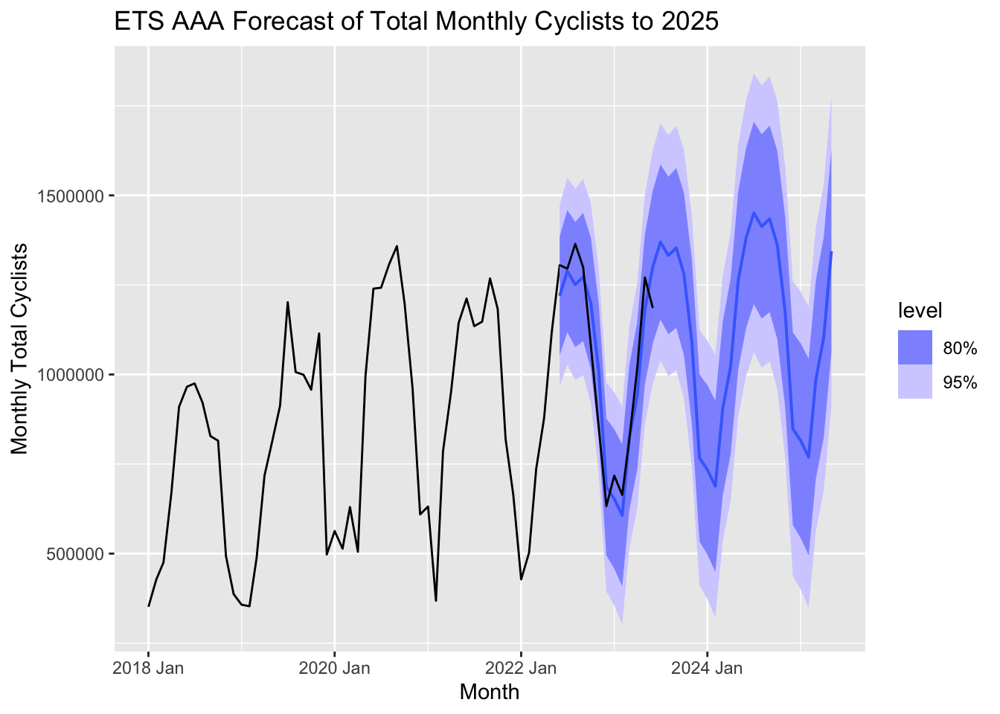
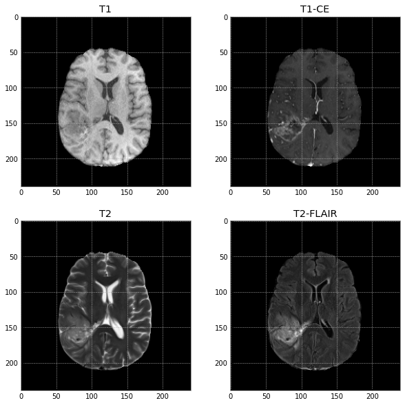
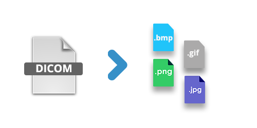

|  |
Project: NYC Cyclist Ridership Count and Violation Data AnalysisSynposis: I joined 2 open data sets in order to analyze bike ridership counts and bike ticketing data over the course of multiple years, pre- and post-covid.Themes: Time Series Analysis, Forecasting, Spatial Data, R Shiny Dashboard, Joining open datasets, Data cleaning, Data exploration Languages used: R Main packages: Tidyverse, R Shiny, fpp3 Report: Report Code: Code R Shiny: R Shiny Dashboard |
|  |
MA Thesis: A Comparison Between Dice Loss and Tversky Loss on Training a 3D U-Net Model to Detect Tumor Tissue in Brain MRI ScansSynposis: I used publicly available 3D Brain MRI data to train a deep learning U-NET algorithm to detect tumor tissue.Themes: MRI Analysis, Deep Learning, U-Net CNN models, Loss functions Languages used: Python Modules: Tensorflow, Pandas, NumPy, PIL, Nibabel, Matplotlib, Seaborn, h5py Link: Thesis |
|  |
Code: Convert dicom files to image filesSynposis: I utilized pydicom to code a program that converts DICOM files that contain multiple slices to individual image files (tiff, jpg) for each slice.Languages used: Python Modules: pydicom, NumPy Link: Code |